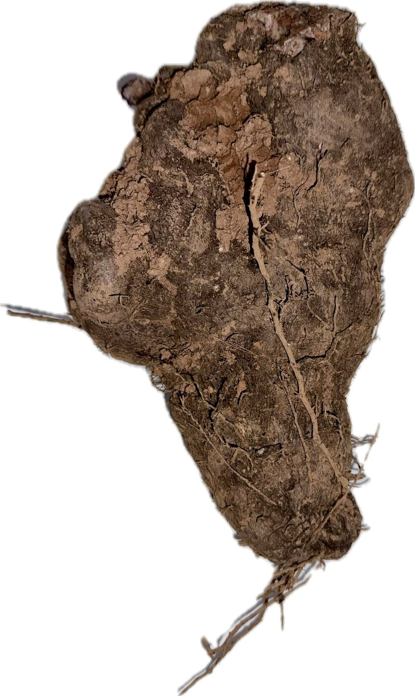
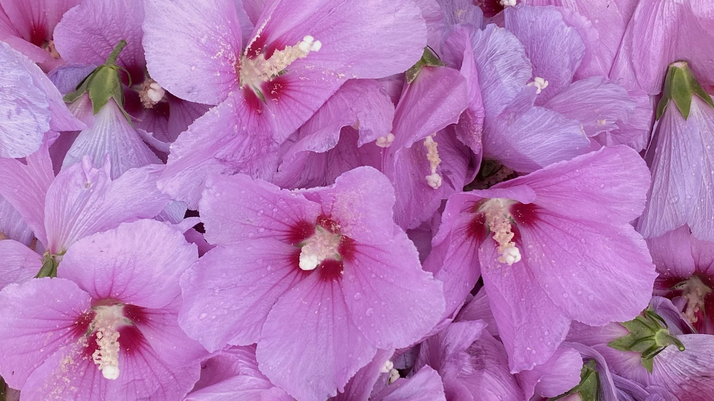

AYHAK · 江西安远Anyuan, Jiangxi
安远话
植物图集
Plants and Plant Knowledge in Anyuan Hakka
记录安远植物的地方名称、声音与日常用途。Recording the local names, sounds, and everyday uses of plants in Anyuan.
Plants of Anyuan

Contents
目录Contents
这本图集记录了安远当地可食用植物的安远话名称、发音、形态和用途。我们通过照片记录植物在不同生长阶段的样子，也收集与采摘、处理和食用有关的地方说法。
This atlas documents the names, pronunciation, forms, and uses of edible plants in Anyuan Hakka, a Hakka variety spoken in Anyuan County, Jiangxi, China. Photographs capture plants at different stages of growth, alongside local expressions associated with harvesting, processing, and food preparation.
点照片看这种植物，点喇叭听安远话怎么说。Open a photograph to see the plant; tap the speaker to hear its Anyuan Hakka name.
3Plates
图集Plates
载入中…Loading…
Example
从田里到厨房 · 薯From field to kitchen · 薯
以 薯 [seɪ³²⁴] 为例。薯是当地种植的大薯（Dioscorea alata）。从田里的薯到做好的食物，我们记录了薯粄、薯包、薯酒等名称，也收集了采收、处理和制作过程中的说法。
这些词和说法，把植物、食物与日常生活联系在一起。
Take 薯 [seɪ³²⁴], the greater yam grown locally (Dioscorea alata). Following it from the field to finished food, we recorded names such as 薯粄, 薯包, and 薯酒, as well as expressions used in harvesting, processing, and cooking.
These words and expressions connect the plant, its foods, and everyday life.

About this atlas
关于这份图集About this atlas
记录方法、知识来源和授权，给想深入了解的读者。Methods, sources, and permissions, for readers who want the details.
拍照也是一种记录Photography as documentation
在这个项目中，照片不只是展示植物的配图，也是记录过程的一部分。拍摄植物的不同生长阶段，以及采收、处理和制作后的样子，会引出不同的问题，也帮助我们记录更多名称和日常说法。
In this project, photographs are not just illustrations of plants; they are part of the documentation process. Photographing plants at different stages of growth, and after harvesting, processing, and cooking, prompts different questions and helps us record more names and everyday expressions.
- 01从照片引出说法From photographs to expressions拍摄植物及其加工后的样子，记录相关的名称和表达。Photograph plants and what they become, and record the related names and expressions.
- 02把材料联系起来Connecting the materials将名称、照片、地点、录音和用途放在同一条记录中。Keep names, photographs, places, recordings, and uses together in one record.
- 03让材料回到社区Bringing materials back to the community网页将照片与录音联系起来；纸质版计划通过二维码播放录音，让不同年龄、不同使用习惯的人都能查阅。The website links photographs with recordings; a printed edition is planned, with QR codes that play the same recordings, so that people of different ages and habits can use it.
知识来源：地方知识、文献和研究证据Sources: local knowledge, literature, and research evidence
- 地方知识Local knowledge
- 安远居民怎么称呼、种植、食用或使用这种植物，注明来自哪个乡镇、谁分享的。How people in Anyuan name, grow, eat, or use the plant, with the township and contributor noted.
- 文献记录Published records
- 植物学、民族植物学、民族药物学文献记载的内容，注明文献和研究地点；别的地区的记录不能直接当成安远的传统。What botanical, ethnobotanical, and ethnopharmacological literature records, with the source and study area noted; records from other regions are not assumed to apply to Anyuan.
- 研究证据Research evidence
- 相关科学研究实际支持什么结论、有什么局限。传统用途不等于临床疗效，图集不提供用药建议。What scientific studies actually support, and their limits. Traditional use is not clinical efficacy, and this atlas gives no medical advice.
参考书目Reference works
- Gary J. Martin. Ethnobotany: A Methods Manual. 民族植物学方法。Ethnobotanical methods.
- Christine Leon & Lin Yu-Lin. Chinese Medicinal Plants, Herbal Drugs and Substitutes: An Identification Guide. Royal Botanic Gardens, Kew, 2017. 药用植物和药材的鉴定。Identification of medicinal plants and herbal drugs.
- Common Chinese Materia Medica (Springer). 药材名和植物名不一定一一对应。Drug names and plant names do not always correspond one-to-one.
- Hu H., Yang Y., Aissa A., et al. (2022). Ethnobotanical study of Hakka traditional medicine in Ganzhou, China and their antibacterial, antifungal, and cytotoxic assessments. BMC Complementary Medicine and Therapies 22: 244. doi:10.1186/s12906-022-03712-z 赣州 18 个县区的草药市场调查，调查点包括安远。Herb-market survey across 18 counties and districts of Ganzhou, including Anyuan.
- Au D. T., Wu J., Jiang Z., et al. (2008). Ethnobotanical study of medicinal plants used by Hakka in Guangdong, China. Journal of Ethnopharmacology 117(1): 41–50. doi:10.1016/j.jep.2008.01.016 研究地点是广东。Study area: Guangdong.
- Medicinal plants traded in Hakka communities of southeastern Guangxi, China (2025). Journal of Ethnobiology and Ethnomedicine. PMC12254970 研究地点是广西东南部。Study area: southeastern Guangxi.
图集只引用书目、概述要点；照片都是我们自己拍的。We cite and summarise these works; all photographs are our own.
范围、鉴定和授权Scope, identification, and permissions
- Project scope · 项目范围
- 计划记录安远当地22种可食用植物，现已上线的条目见图集；也记录这些植物在当地的药用和其他用途。每条记录标明说法来自哪个乡镇，尚未标明的写“待补”。We plan to record 22 edible plants from Anyuan, with the entries online shown in the plates, together with their medicinal and other local uses. Each record notes the township a name comes from; where not yet recorded, it is marked as pending.
- Language documentation · 语言记录
- 安远话名称用汉字和国际音标（IPA）记录，声调用五度调值数字标本调。有录音的条目可以直接播放。不同乡镇的不同叫法分别记录，不合并成一个“标准”名称。Anyuan Hakka names are written in Chinese characters and the International Phonetic Alphabet (IPA); tones are given as Chao tone numbers for citation tones. Entries with recordings can be played directly. Different names from different townships are recorded separately rather than merged into one “standard” name.
- Plant identification · 植物鉴定
- 学名只在能确定时列出；尚未确认的条目标注“待鉴定”或“待核实”。安远话的植物名称和普通话名称、学名不一定一一对应。Scientific names are given only where they can be confirmed; others are marked as pending or to be verified. Anyuan Hakka plant names do not necessarily map one-to-one onto Mandarin names or scientific taxa.
- Fieldwork and photography · 田野调查与摄影
- 照片由 Juan Zhong 拍摄。Photographs by Juan Zhong.
- Contributors · 参与者
- 参与者提供的叫法、照片和录音，按本人同意的方式署名或匿名。Names, photographs, and recordings from contributors are credited or kept anonymous as each person chooses.
- Use and permissions · 使用与授权
- 文字与照片采用 CC BY-NC 4.0；录音只在本网站播放，使用范围以发音人同意的为准，转载或用于研究请先联系我们；网站代码 CC0。Texts and photographs: CC BY-NC 4.0. Recordings are played on this site only, within the scope each speaker agreed to; please contact us before republishing them or using them in research. Website code: CC0. 授权说明License details
Join us
参与Join us
你家里人怎么叫这些植物？你们村有没有别的叫法？用它们做过什么吃的？欢迎发来照片、叫法或者一段录音，会说多少都可以。
What does your family call these plants? Is there another name in your village? What have you made with them? Photographs, names, or a short recording are all welcome, however much Anyuan Hakka you speak.
发邮件给我们Email us 参加安远话复健会Join the meetups 回到 AYHAK 首页Back to AYHAK
Colophon
安远话植物图集
Plants and Plant Knowledge in Anyuan Hakka
AYHAK · 江西安远Anyuan, Jiangxi
摄影：Photographs: Juan Zhong
联系方式：Contact: juanzhon AT buffalo DOT edu
© 2026 Juan Zhong
9